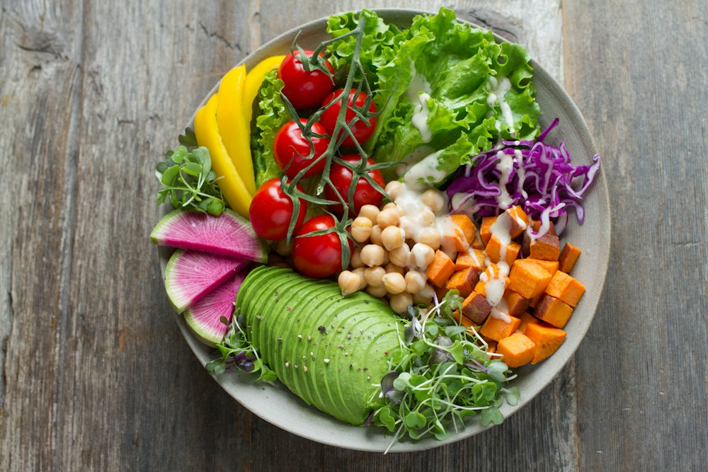

Choose a food photo for an automatic estimate. Adjust it if needed.
01 / FOOD JOURNAL
Your meal, up close
Private photo
Start with a photo
Snap your plate or choose a photo. Nothing is uploaded to a server.
Correct the food guess (optional)
The photo is analyzed on your device. First use downloads a free model (about 93 MB). Ingredients and portion sizes are assumptions, not measurements.
What’s in your meal?
Inferred ingredients appear here automatically. Corrections are optional.
STEP 02
Templates suggest ingredients only. Enter your own quantities; they are never inferred from the photo.
MAKE SOMETHING GOOD
Your pantry has possibilities.
A little inspiration, using what you already have.
02 / COOK SMARTER
LESS WASTE. MORE GOOD FOOD.
Good meals start with what’s here.
Add your ingredients. We’ll find the closest matches and tell you exactly what’s missing.

On your shelves
0 items
A meal that fits your day
Local ingredient matching
YOUR LITTLE COLLECTION
Welcome to your kitchen.
The ingredients, recipes, and meals worth keeping.
03 / JUST FOR YOU
Saved recipes
A little inspiration for another day.
Your meal journal
Nutrition summaries from quantities you confirmed.
Saved pantry
Saved in this browser using IndexedDB. Clearing site data or using another browser removes or separates your kitchen. There is no account or cloud backup.